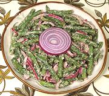

|
Green Bean & Walnut SaladGeorgia - Mtsvani Lobios Pkhali | ||||
| Serves: Effort: Sched: DoAhead: |
6 salad ** 1 hr Yes |
A typical (and tasty) Georgian bean and walnut salad, ideal for buffet tables and other places where a durable room temperature salad is called for - also, it is delicious! | |||
|
1 4 ----- 3 2 2 1 1 3 1 1/4 ----- 1/4 |
# oz --- oz cl T T T T t t --- c |
Green Beans Red Onion -- Dressing Walnuts Garlic Wine Vinegar red Lemon Juice Water Olive Oil Salt Pepper, black ----------- Cilantro |
MAKE - (1 hr - 25 min work)
|